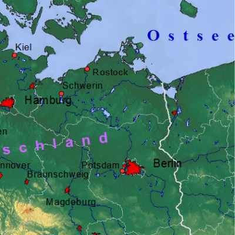

| \(K_U\) | \(\cdot\) | \(\left( \frac {\rho_M}{\rho_U} \right)^\frac13\) | \(\cdot\) | \(d_M^{0,78}\) | \(\cdot\) | \(v_M^{0,44}\) | \(\cdot\) | \(\sqrt[3]{sin \theta}\) | \(\cdot\) | \(g^{0,22}\) | ||
| Untergrundkonstante | Dichte Meteorit Dichte Untergrund |
Durchmesser | Geschwindigkeit | Einschlagwinkel | ||||||||
|
|
||||||||||||
| \(\cdot\) | \(\cdot\) | \(\cdot\) | \(\cdot\) | \(\cdot\) | \(\left(9,8 \frac m {s^2} \right)^{-0,22}\) | \(=\) |
|  |